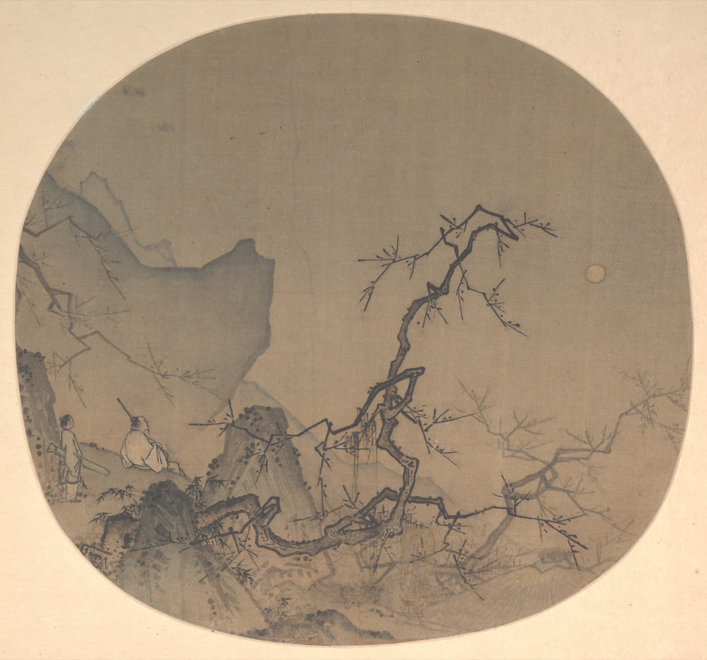

马远《月下赏梅图》大都会艺术博物馆藏
治事有常，遇事知变
以正治国，以奇用兵，以无事取天下。
- 正
- 治国之常日常守原则
- 奇
- 不得已的应变遇例外再调整
- 无事
- 人心自归少扰百姓
加码之后，看人怎样应对
吾何以知其然哉？以此。
天下多忌讳，而民弥贫；
人多利器，国家滋昏；
人多伎巧，奇物滋起；
法令滋彰，盗贼多有。
- 问题恶化
- 规则加码
- 忙于应付
可能让问题进一步加重
四个“我”，四个“自”
故圣人云：
“我无为而民自化，
我好静而民自正，
我无事而民自富，
我无欲而民自朴。”
- 我
为政者收敛强作与扰动
- 自
百姓自主安排生活
从根本与自身入手
王弼
崇本以息末
- 先立根本
- 末端弊病平息
河上公
正身
- 减徭役征召
- 民安其业
- 去华饰
- 民风趋朴
听见实情，稳住自己
苏辙
实情能否上达
- 在上者多忌讳
- 民情难上达
陈鼓应
好静与无欲
- 节制巧诈之欲
- 保持清静
- 少扰民
真与假
对己
认识真实的自己
难在分辨真实动机与自我粉饰。
对人
说真话，也听真话
真诚对待下属、家人和孩子，也让他们能说实话。
实与虚、空
实有效用，无有妙用。
从所见的实，回到真
- 所见被呈现的实眼前的事实也可能只是一部分
- 核对来源与缺口谁希望我看见什么？
哪些事实没被呈现？
- 行动真正的问题用原始证据和当事人的实情判断
哪些表象容易牵着人走
| 场景 | 眼前信号 | 要核对的事 |
|---|
| 欲望 | 我现在就想要 | 我真正需要什么？ |
|---|
| 管理手段 | 报表数字变好了 | 实际问题解决了吗？ |
|---|
| 商业消费 | 限时优惠 | 没有折扣时，我还需要它吗？ |
|---|
务实，要回到真。